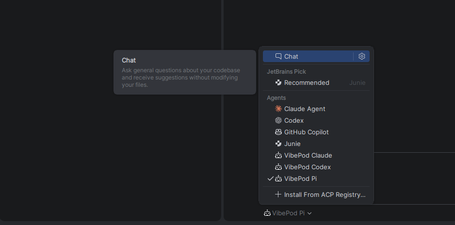
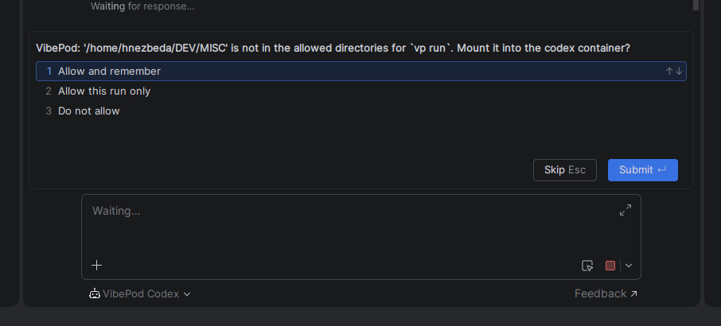

Editor integration (ACP mode)¶
VibePod can act as an Agent Client Protocol
(ACP) adapter. ACP is an editor-agnostic, JSON-RPC-based protocol: any editor
or client with ACP support can launch vp run <agent> --acp as a subprocess
and embed the containerized agent directly in its AI panel — instead of only
the integrated terminal. Everything that makes a VibePod run what it is —
container isolation, profiles, project overlays, the MITM proxy and local
metric collection — stays active.
Supported agents¶
Eleven agents ship an ACP adapter command. They split into two kinds, which differ in what has to happen before the first JSON-RPC frame:
| Agent | Adapter |
|---|---|
opencode |
opencode acp — built into the CLI |
copilot |
copilot --acp --stdio — built into the CLI |
auggie |
auggie --acp — built into the CLI |
jcode |
jcode acp — built into the CLI |
gemini |
gemini --experimental-acp — built in |
qwen |
qwen --experimental-acp — built in |
devstral |
vibe-acp — separate binary in the image |
hermes |
hermes-acp — separate binary in the image |
claude |
npx @agentclientprotocol/claude-agent-acp |
codex |
npx @agentclientprotocol/codex-acp |
pi |
npx pi-acp — community adapter |
The first eight run a binary that is already in the image, so they start
offline and immediately. claude, codex and pi fetch their adapter with
npx, which needs the package registry reachable through the proxy filter and
adds startup latency: claude and codex download on every launch, pi
only on the first one, because its npm cache lives in the config mount. The
pi adapter is a community project, svkozak/pi-acp,
that runs the pi installed in the image and needs pi 0.80.4 or newer. It
prints pi's startup info (version, skills, prompts) into the first session;
quietStartup: true in pi's settings silences it (pi's settings live under
~/.config/vibepod/agents/pi/.pi/agent/ on the host, or in
<project>/.pi/settings.json). The claude and codex adapters bundle a copy
of their agent CLI; VibePod points
them at the image's own binary instead
(CLAUDE_CODE_EXECUTABLE and CODEX_PATH), so the version the image pins is
the one that runs, and an optional platform package that npm skipped does not
abort the launch. Override the variable in agents.<agent>.env when a custom
image installs the binary elsewhere.
Other agents abort with an error listing the supported agents (you can still
provide your own adapter via agents.<agent>.acp_command in the config —
that is also how you pin an npx adapter to a version).
Setup¶
Register vp as an external or custom ACP agent in your editor. Use an
absolute path to the executable because GUI applications do not necessarily
inherit your shell PATH. -w can be omitted: Zed, PyCharm and the VS Code
ACP Client all start the agent in the open project (the first worktree or
workspace folder), and vp run takes its working directory as the workspace,
so one entry serves every project. Pass -w when the project is not the
first folder of a multi-root workspace, or when the editor runs the agent on a
remote host and sets no working directory (Zed's remote projects, including
the WSL setup below).
Allow the project directory before opening the first editor session, or
answer the question in the editor: editor stdin is a protocol pipe, so the
TTY prompt cannot run, and vp instead sends it as an ACP form (see
Questions in the editor).
Authenticate the selected agent once interactively when its ACP adapter or editor does not provide the required login flow:
Credentials persist in the agent's config directory. Replace claude in the
examples below with any agent from the supported-agent table.
Editor integrations¶
Zed¶
Zed supports ACP External Agents natively.
Open Agent Settings, select External Agents, then Add Agent →
Add Custom Agent, or add this entry to settings.json:
{
"agent_servers": {
"VibePod Claude": {
"type": "custom",
"command": "/absolute/path/to/vp",
"args": [
"run",
"claude",
"--acp"
],
"env": {}
}
}
}
Select VibePod Claude when starting an External Agent thread. Run
dev: open acp logs from the command palette to inspect startup errors and
protocol traffic.
PyCharm and other JetBrains IDEs¶
JetBrains IDEs support custom ACP agents natively
through the AI Assistant plugin. In AI Chat, open the More menu and select
Add Custom Agent. This creates ~/.jetbrains/acp.json; add:
{
"default_mcp_settings": {},
"agent_servers": {
"VibePod Claude": {
"command": "/absolute/path/to/vp",
"args": [
"run",
"claude",
"--acp"
],
"env": {}
}
}
}
Add one entry per agent you want to use; they appear under Agents in the chat's agent picker next to the built-in ones:

Select an entry in AI Chat. The agent works on the project through the path-parity mount, so file paths in its answers are the host paths PyCharm knows:

Use Get ACP Logs from the AI Chat More menu for diagnostics. PyCharm asks the allow-dir and compose-network questions as forms in the chat, since it advertises form elicitation.
JetBrains IDEs do not currently support ACP agents through WSL
Use PyCharm on native Linux or macOS for this integration. This is a JetBrains client limitation; the Zed remote-WSL setup documented below is unaffected.
Visual Studio Code¶
For Visual Studio Code, install an ACP client extension. This example uses the
third-party
ACP Client extension.
Install it, run ACP: Add Agent Configuration from the command palette, or
add this to your user or workspace settings.json:
{
"acp.agents": {
"VibePod Claude": {
"command": "/absolute/path/to/vp",
"args": [
"run",
"claude",
"--acp"
],
"env": {}
}
},
"acp.autoApprovePermissions": "ask",
"acp.logTraffic": true
}
Open the ACP Client panel and connect to VibePod Claude. Use ACP: Show Log or ACP: Show Protocol Traffic for diagnostics.
How it works¶
vp run <agent> --acp starts the container without a TTY, attaches before
the entrypoint runs (so the first JSON-RPC frames are not lost), and
demultiplexes the Docker stream: container stdout carries only the
newline-delimited JSON-RPC stream, all VibePod messages go to stderr. The
workspace is mounted a second time onto its own host path so absolute paths
from the editor (session cwd, @-mentions, diffs) resolve identically inside
the container. If that path goes through a symlink (macOS /tmp, a linked
~/code), the unresolved spelling is bound as well, so the path the editor
sends and the resolved one both exist in the container.
Questions in the editor¶
Before the container exists, vp run may need an answer the TTY prompt
would normally collect: allow a workspace that is not on the allow list, or
pick a compose network. ACP has a request-scoped elicitation for exactly this
phase: vp holds the editor's initialize request, sends
elicitation/create tied to it, and the editor renders a form. "Allow and
remember" adds the directory to the allow list, "Allow this run only" mounts
it without persisting, "Do not allow" aborts. The bytes read from the editor
during this exchange are replayed into the container once it starts, so the
adapter still answers the untouched initialize itself.

The form appears when the chat opens, not when you send the first prompt: editors create the ACP session as part of opening the chat.
Editors that do not advertise clientCapabilities.elicitation.form fall back
to the non-interactive behaviour: the allow-dir check aborts with the
vp config allow-dir hint and the network prompt is skipped. Either way, a
pre-launch abort is reported as a JSON-RPC error on the pending initialize,
so the editor shows the reason instead of a bare "process exited with code 1".
When you close the thread, the editor kills the vp process; the container
sees stdin EOF, the adapter exits, and auto_remove cleans up — no orphaned
containers. vp exits with the adapter's exit code, so a crashed adapter
shows up in the editor as a failure rather than a clean exit, and a container
whose attach failed before it ever started is removed rather than left behind.
Windows: run it from WSL2¶
ACP itself is platform-neutral, and your editor's ACP support is not the
problem — the path-parity mount is. A Linux container's bind target has to be
a Linux path, so C:\Users\you\proj cannot be mounted onto itself and --acp
refuses a Windows workspace path.
WSL2 works today, with no special flags: put the project on the WSL filesystem,
enable Docker Desktop's WSL integration, install vp in the distro, and open
the project as a remote WSL project in your editor (in Zed:
projects: open folder in wsl). The editor then spawns vp inside the distro,
every path on both sides is POSIX, and the parity mount lines up.
{
"agent_servers": {
"VibePod Claude": {
"type": "custom",
"command": "/home/you/.local/bin/vp",
"args": ["run", "claude", "--acp", "-w", "/home/you/proj"],
"env": {}
}
}
}
Use an absolute path to vp (the spawn environment is not a login shell) and
pass -w explicitly here: Zed treats a WSL project as remote and starts the
agent without a working directory, and VibePod never reads the cwd the ACP
client sends.
Do not bridge a Windows-side project through wsl.exe
Running a Windows-native editor against a Windows-side project with
"command": "wsl.exe" looks like it works and then silently misbehaves:
the editor sends C:\dev\proj while VibePod mounts /mnt/c/dev/proj, and
nothing translates between them. The path starts with /, so the guard
above does not catch it. Keep the project, the editor's remote server and
vp all on the Linux side.
Limitations¶
- The workspace host path must not collide with container-reserved paths
(
/workspace,/config,/claude,/qwen,/etc,/usr,/tmp/.X11-unixand the agent's config mount);--acpaborts with a clear message if it does. --acpcannot be combined with--detach; the ACP client owns the process lifetime.--ikwidis ignored — permissions are negotiated by the editor over ACP.
Debugging¶
VibePod diagnostics go to stderr and appear in the editor's ACP logs. Use the
log command named in the relevant editor integration above. A failure before
the container starts is also answered on the initialize request, so the
same message shows up in the editor's chat panel.
To reproduce an editor launch outside the editor, pipe an initialize frame
into the same command; stdin must be a pipe, not a terminal:
( printf '%s\n' '{"jsonrpc":"2.0","id":0,"method":"initialize","params":{"protocolVersion":1,"clientCapabilities":{}}}'; sleep 20 ) \
| vp run claude --acp -w /absolute/path/to/project
A working setup prints the adapter's initialize response on stdout.
Anything else arrives on stderr, or as a JSON-RPC error on stdout.